Priority fixes
and the 36-finding continuation
Historical priority-fix snapshot. The latest 36-scoped native follow-up is directly below; its current test counts and handoff warning are in the linked report.
41 / 41 original findings implementedThe age-check bypass, unclear pending Pay Later outcome, overlapping attendance and unsafe category/tax deletion were addressed in priority order. Native retests caught two further compatibility failures; both were corrected and retested.
This follows the original 41-finding audit. The four high-priority fixes and related future-attendance guard are documented below; the remaining 36 findings now have implementations, one-by-one evidence and explicit verification limits in the continuation report. The pending Pay Later timeout Review/Recover path has now passed a native Tauri test for original receipt 1000085. Implementation completion is not a claim that every hardware, Windows or injected-failure scenario has passed.
Latest native follow-up
The remaining36 findings now have19 earlier plus17 newly verified scoped native verdicts. Open the completed17-check native report; the earlier continuation keeps historical verdicts for traceability.
Original trolley preservation NOT CONFIRMED: final0items/£0.00 differs from earlier reported16/£103.83; exact event unknown. A separate source-confirmed ordinary-unheld RAM-cart persistence risk remains unfixed. Scope completion does not mean every app issue, Windows, physical hardware or live payments are certified.
Automated checks
Final frontend suite: 1,234 passed and 56 optional tests skipped (1,290 total), across 95 passed and 3 skipped files (98 total). Those skips include 54 real-database cases separately passed and 2 other optional cases not run. Rust: 251 passed, 10 cases filtered and 4 existing dead-code warnings; one filtered generic-stock database case passed separately, while 9 other optional cases were not run. The disposable MariaDB total is 55 real cases: 42 catalogue, 9 attendance, 3 stock-count SQL and 1 native generic-stock replay; 14 additional unit cases are excluded. Earlier priority-stage checks had 1,085 frontend passes and 39 real isolated MariaDB passes. These scopes are not an additive total.
The Tauri command permission audit passed (95 frontend commands, 101 registered), git diff --check passed, and the final normal native debug macOS bundle built and launched without the test fault flag. An independent reviewer also ran 88 focused tests before the last compatibility changes.
Final independent release-safety spot check passed: the test fault target was absent from both native manifests; 20 QA text artifacts and 141 screenshots were checked locally for the selected sensitive-data patterns without emitting values; 203 frontend build files contained no QA artifacts/references. Stock CAS/audit/cache/conflict and metadata-replay guards remained intact. This is not an exhaustive security audit or a Windows/live-hardware verdict.
171 native observations were retained during the initial priority retest, 19:25–19:53 Europe/London. Subsequent native continuation evidence is linked separately. Observed actions are not automatically passing verdicts; scenario outcomes identify the checked successes, caught failures and test limits.
Reproduce the automated checks safely
npm run check npx vitest run # src-tauri directory; excludes app/live-database-dependent tests env -u POS_TEST_MYSQL_URI -u LBJ_PRINTER_MODULE_TEST_PACKAGE cargo test --offline --locked --lib -- --skip real_mariadb --skip live_snapshot_is_consistent_and_schema_lock_is_connection_scoped --skip validates_a_package_created_by_the_javascript_packager_when_supplied --test-threads=2 # Only a separately initialized disposable server, not configured shop credentials POS_TEST_CATALOGUE_SOCKET=/tmp/pos-EXAMPLE/mysql.sock POS_ATTENDANCE_TEST_SOCKET=/tmp/pos-EXAMPLE/mysql.sock npx vitest run src/lib/catalogueIntegrity.integration.test.ts src/lib/stores/attendanceMariaDb.test.ts npm run tauri build -- --debug --bundles app
1. Age-restricted cached scan bypass
OPS-NATIVE-CACHED-SCAN-AGE-GATE-BYPASS · Native regression passed
Enter is consumed before product lookup, including the synchronous cached path. The dialog starts on a neutral heading. A keyboard guard rejects inherited/held Enter or Space and further scanner bursts; a new deliberate approval remains available.
- First scan of restricted mock barcode 4343 opened the age gate; Do Not Add left the trolley empty.
- Cached rescan with Return held for 700 ms still opened the gate without adding an item.
- A second scan while the dialog was open did not approve it, including while the approval button had focus.
- A deliberate pointer approval, and a separate fresh keyboard approval, each added exactly one £6.99 item. Approved test items were removed without a sale.
- The final incremental bundle was rechecked: cancellation and cached scan with held Return again kept the item behind the age gate.
Native checks used the 1024×768 window. These are keyboard-wedge and pointer tests, not certification of every physical scanner, weighed item or conditional quick-add route.
Native screenshots
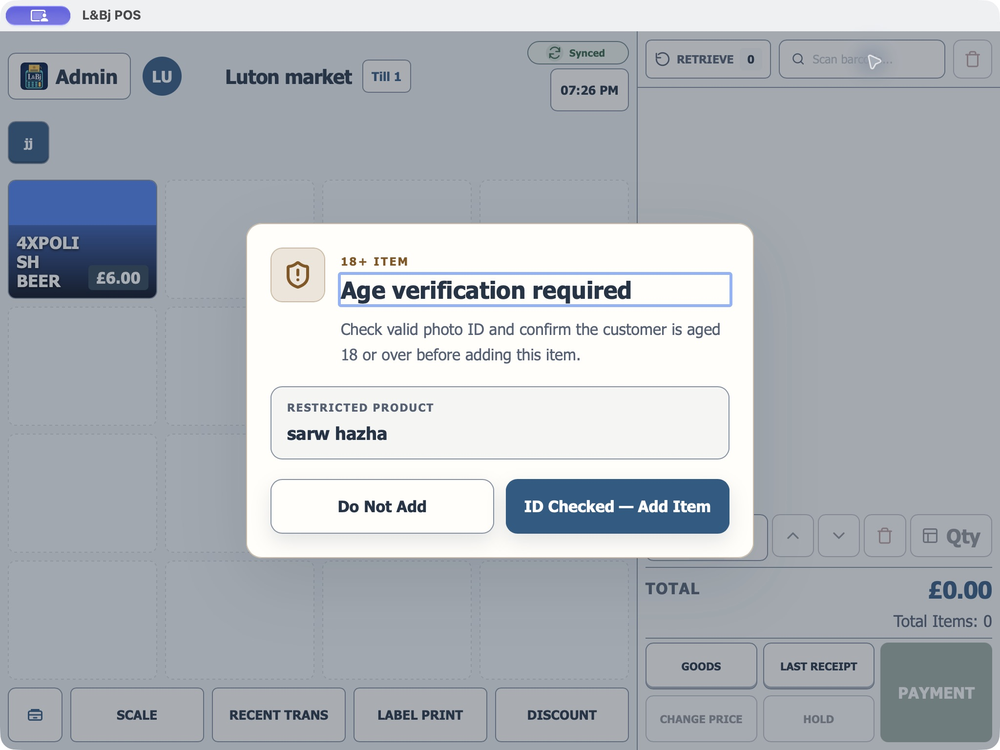
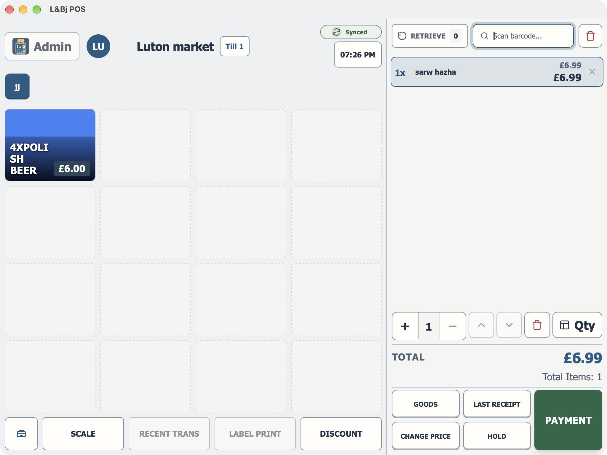
2. Pending Pay Later timeout and recovery
OPS-NATIVE-PAY-LATER-POOL-TIMEOUT-RECOVERY · Native healthy sale and timeout recovery passed
Cold MariaDB acquisition has a bounded five-second budget instead of the overly short connection budget. Stage diagnostics identify the failed step without logging credentials. An uncertain financial operation retains its immutable journal and reserved receipt; it is explicitly pending, not falsely cancelled or declared unsaved.
Persistent Review/Recover controls show the exact receipt, amount and sale lines. Recovery checks the receipt identity and current staff authority and replays that same operation. Replacement sales and account transactions are blocked while an intent remains unresolved. Scans cannot operate checkout behind the recovery modal.
- During the earlier healthy-flow test, the native Pay Later sale for the existing mock customer completed once: receipt 1000084, £1.69. The trolley cleared and the account increased by exactly £1.69.
- That healthy-flow test's normal native £1.69 cash repayment returned the account to £0.00. Points remained zero; the original Pay Later hold setting was restored.
- Isolated Rust tests used a genuinely stalled TCP acquisition, retained the exact journal/receipt and rejected a replacement operation. Replay and permission checks have automated coverage.
- In the subsequent native failure-path test, acquisition timed out after 5,003 ms and the uncertain Pay Later operation retained reserved receipt 1000085. The alert and persistent Review/Recover banner explicitly said pending verification, not cancelled, and warned against charging or refunding again.
- Native Review displayed that exact receipt, the original £1.69 amount, mock customer and one original item. Recover this receipt then confirmed 1000085 completed and verified, with no new transaction created; the pending banner cleared and checkout returned empty and Synced.
- Database proof confirmed exactly one sale and one 169p account charge for receipt 1000085, with no pending financial journal. After a normal native 169p cash repayment, the mock account returned to £0.00 and status On hold, with the positive Allow Pay Later purchases option unchecked. The additional sale and repayment remain audit evidence, rather than being erased.
These Pay Later tests did not submit a card charge. The first screenshot named “05-pay-later-completed” actually shows an intermediate Saving Sale state and is not used as completion evidence or a timing benchmark. The later controlled native recovery test validates this saved-operation path, not every network failure or crash point.
Native screenshots
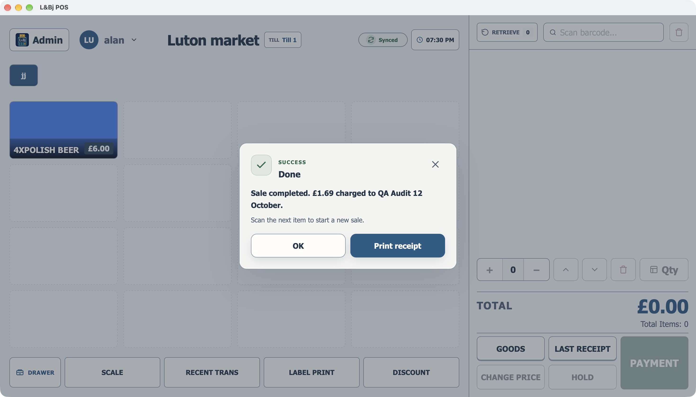
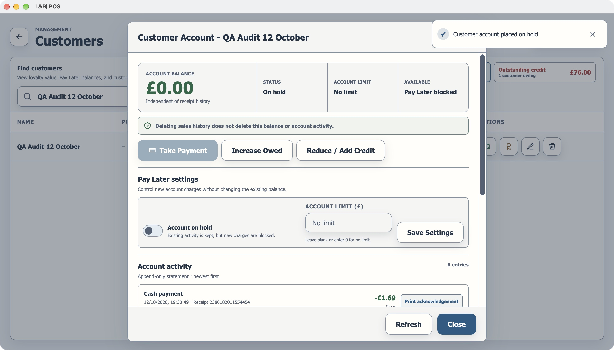
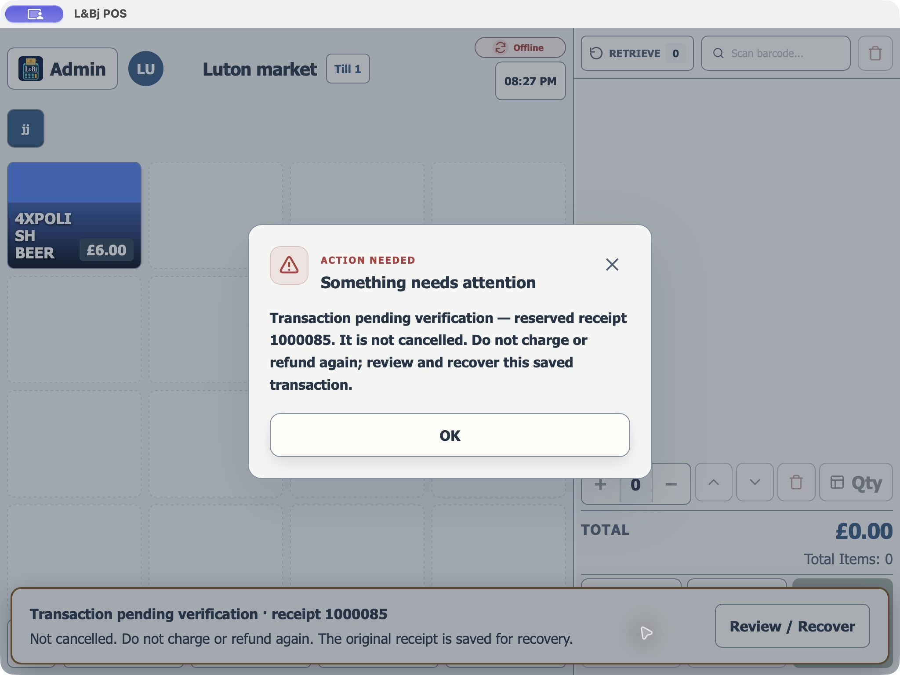
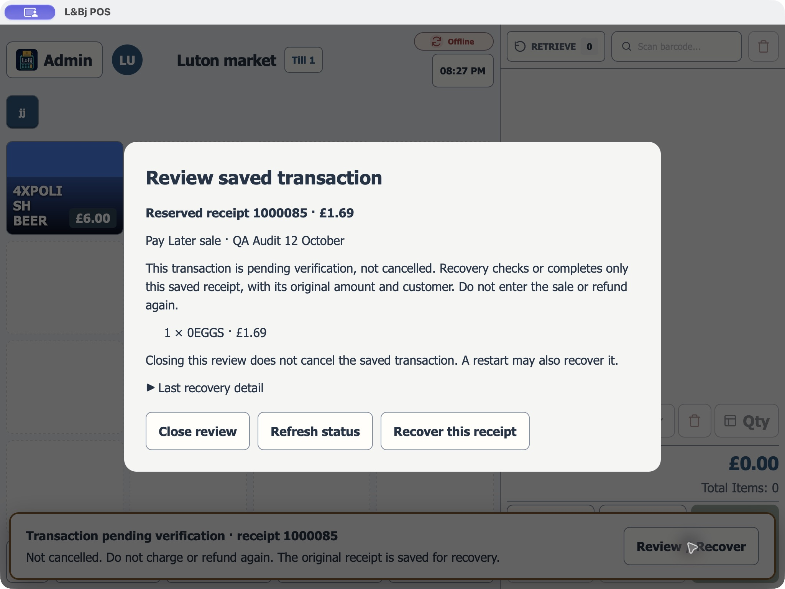
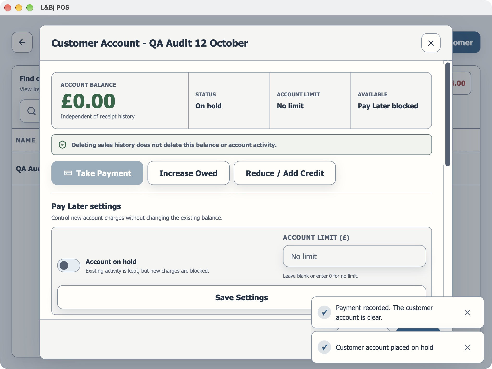
3. Overlapping attendance
OPS-NATIVE-ATTENDANCE-OVERLAP · Native valid/invalid saves passed
SQLite interval checks are atomic. Shared attendance uses a pinned transaction, ordered employee locks, authoritative interval checks and record-version checks. Adjacent intervals are allowed; an existing open session conflicts with later overlapping records. Legacy unguarded clients fail closed instead of bypassing interval safety.
Attendance writes now await native commit or rollback rather than racing an uncancellable frontend timeout. The live staff lookup keeps an indexed exact-identity comparison that works with older General CI employee identifiers and Unicode CI trigger variables.
- Native overlapping Alan record was rejected with the conflicting open record and its dates identified. No new attendance or audit row was created for the failed attempt.
- A genuinely changed clock-out date of 13 October was rejected as future attendance. The related
OPS-SOURCE-ATTENDANCE-FUTUREfinding is covered by the new two-minute clock-skew allowance and server-time validation. - A valid Arda shift, 12 October 11:40–19:40 local, saved once. The list showed 8 hours, 8 total sessions and “Attendance record added”.
- Isolated MariaDB tests covered five overlapping races between different managers: exactly one save won each race. Adjacent sessions, self-correction, stale versions and permission rejection were also checked.
Existing overlapping historical records were deliberately not rewritten. Alan still has an old open session and the earlier audit's conflicting completed record; review that mock history before trying to close it. All shared tills need the updated attendance code before using the new guards.
Native screenshots
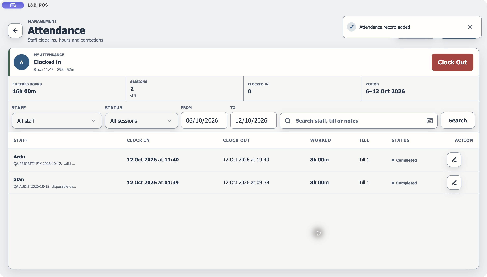
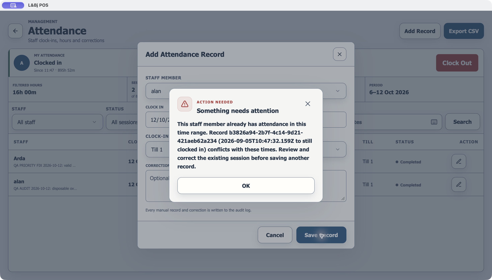
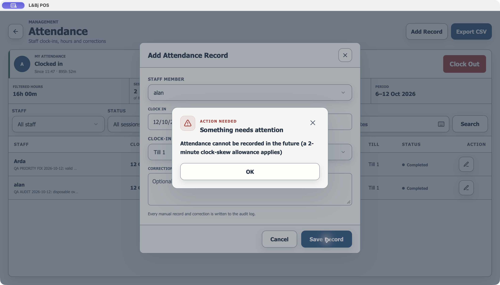
4. Category and tax deletion integrity
AUDIT-01 · Native protections and fixture deletion passed
Usage-query failure stops deletion rather than treating usage as zero. Shared deletion is server-first, with transactional guards against active/inactive item references, default settings, concurrent assignments, stale tombstones and resurrection. Local user deletion remains guarded; only server-confirmed cache tombstones can bypass stale local usage during sync.
Trigger comparisons use each indexed column's installed collation on the right-hand value, preserving older case-insensitive identities without rewriting the shop's parent columns or converting point locks into table scans. The category count query explicitly casts MariaDB aggregates to native-decodable integers.
- Native DRINKS deletion was refused with the correct count: 50 items.
- Native default GROCERY deletion was refused without changing the default.
- A newly created unused “QA Priority Delete 12 Oct” category deleted successfully and vanished from the list. Exactly one tombstone was present.
- Native Standard VAT deletion was refused because 34,747 items use it.
- A newly created non-default “QA Priority Tax 12 Oct” rate deleted successfully. Exactly one tombstone was present; the existing default rate remained unchanged.
- Thirty isolated catalogue cases passed across current and mixed legacy collations, including inactive usage, case-insensitive identities, default protection, concurrent assignments in both orders and nested delete/tombstone behavior without MariaDB error 1442.
Category/tax native captures used 1024×768. The two-client races used the isolated server, not two physical tills. The temporary fixtures alone were deleted; both have retained audit entries and sync tombstones.
Native screenshots
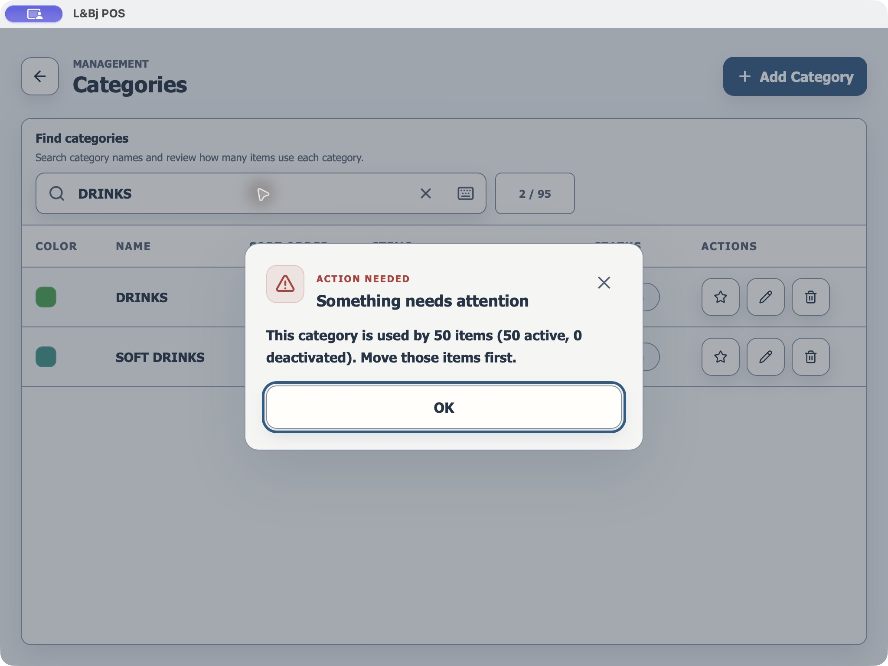
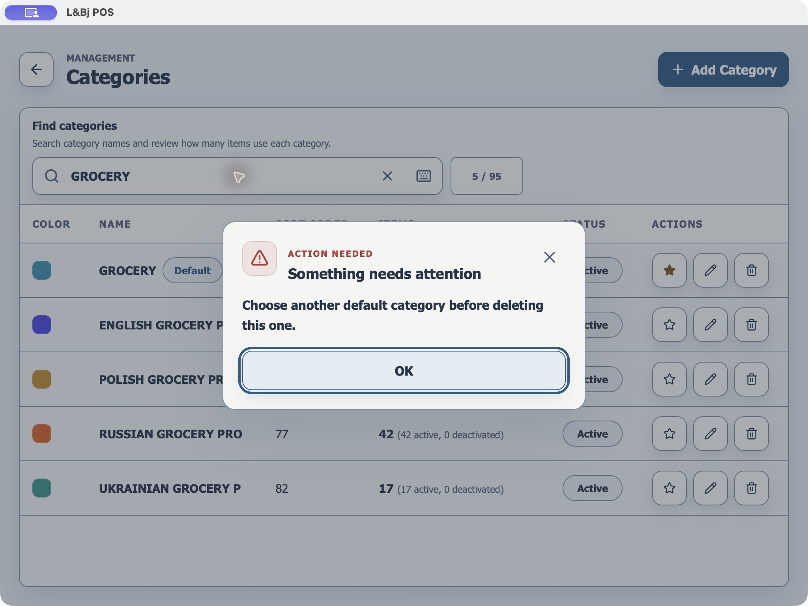
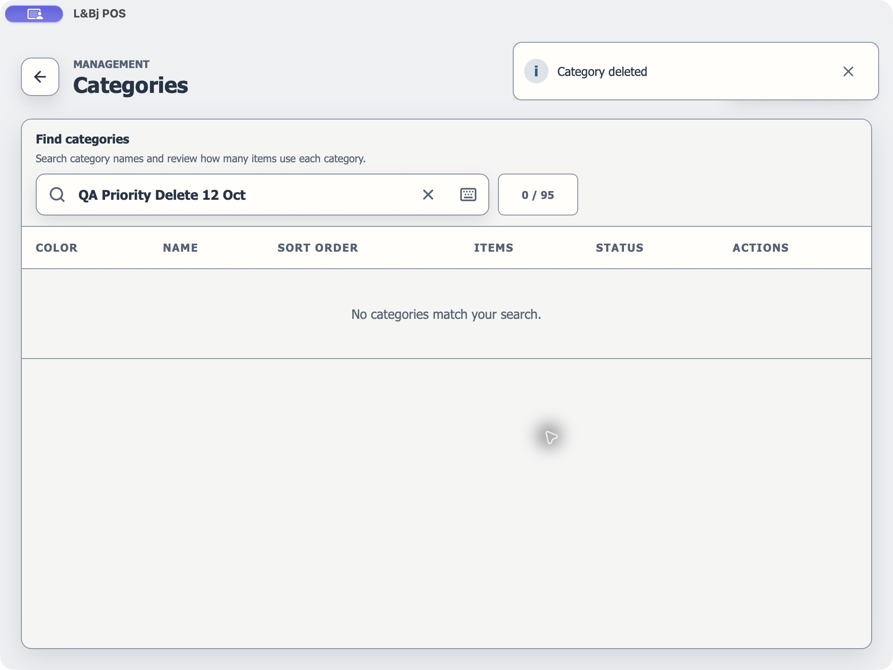
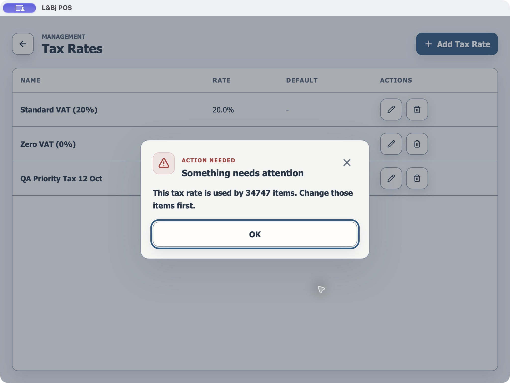
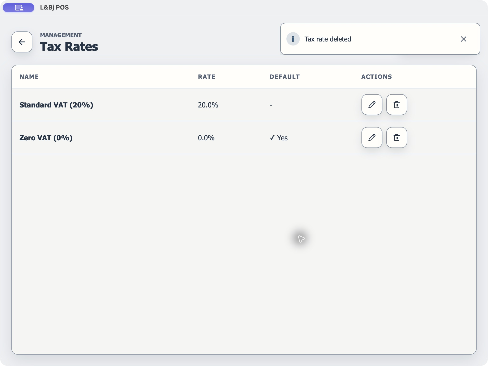
Native testing caught—and fixed—additional failures
| Failure observed | Correction | Verification |
|---|---|---|
| Valid attendance save failed with MariaDB 1267 mixed collations. | Indexed exact actor lookup tolerates legacy employee identifiers; bumped common schema and attendance migration markers. | Mixed-collation isolated tests passed; valid native Arda save passed. |
| Category usage showed Unavailable; delete failed safely. | Cast SUM/COUNT to integral SQL types supported by Tauri's MySQL decoder. | Native usage counts loaded; used/default refusals and unused deletion passed. |
| An incremental native bundle opened blank after frontend-only changes. | Fresh package build restored startup. Added an explicit build-directory dependency for embedded frontend assets. | Final incremental bundle rebuilt and native startup rechecked; source/database were not cleared. |
The blank startup is consistent with stale embedded assets; a complete forensic WebKit-cache diagnosis was not performed. Only generated Rust package build artifacts were cleared, and they can be rebuilt. Early screenshots 10, 12 and 16 are not passing evidence: 10 was still an overlap alert, 12 showed the collation failure, and 16 missed the usage-error alert.
The remaining 36 findings
The 20 P2 and 16 P3 findings now have source fixes, automated or source evidence, and separately recorded native results in the one-by-one continuation report: 19 explicit native scenario passes, 13 partial observations, four automated/source-only findings and zero planned native retests pending. Partial and automated-only coverage is not promoted to a blanket native PASS.
- Native schema validation completed and its button returned to an enabled state.
- Configured setup Cancel returned to Advanced Settings. Test Connection and Save & Reconnect Only completed without entering import, forced-upload or cache-rebuild UI; order, customer and tax-rate counts remained 91, 855 and 2 across those connection checks.
- A native font change saved, then the original Legacy selection was restored. The unchecked barcode fixture
2312345002502displayed Not checked without changing its saved rule. - Native 0EGGS stock save counted 0 → 1, then restored 1 → 0 and item tracking off, preserving its 169p price. Exactly two normal stock-count audit rows remained; queues, conflicts and financial intents were clear. Stale/error branches have separate automated coverage, so this is a partial native verdict.
- Final native 1024×768 Back Office scale layout showed all tested fruit/tomato/watermelon price rows fully, with toolbar actions visible and page chips independently scrolling.
Final automated suites and planned native scenarios are complete. These observed success paths do not certify injected provider/disk failures, every maintenance action, Windows installs or physical hardware. Counted stock uses CAS plus audit in an atomic local batch or guarded shared transaction; generic existing-product metadata replay cannot overwrite authoritative stock. Full source/test proof is linked in the continuation report.
Read all 36 implementations, native evidence and limits · Machine-readable implementation tracker
Data and handoff
Final handoff verified: normal no-fault Tauri bundle open on Checkout as Alan, trolley empty / £0.00 / Synced; offline queue, financial intents, conflicts and active terminal attempts all zero. Final counts: 91 orders, 855 customers, 95 categories, two tax rates and eight attendance records. Historical fixtures and evidence below remain retained.
- The initial priority retest ended with native checkout empty and Synced, without an unresolved financial intent or pending offline uploads. The later original-receipt recovery also returned checkout empty and Synced.
- Orders: 89 before the initial priority retest, 90 afterward, then 91 after the continuation's recovered Pay Later receipt. Both £1.69 mock sales and their matching repayments remain visible for audit.
- The earlier healthy sale left the mock customer at £0.00, zero points and its original Pay Later hold setting, with statement entries increasing from 4 to 6. The subsequent recovery test again restored the account to £0.00 and on hold.
- Attendance: 7 before, 8 afterward. The new eight-hour Arda fixture is explicitly labelled “QA PRIORITY FIX 2026-10-12: valid non-overlapping attendance test fixture”. Existing records were not silently repaired or erased.
- Categories: 95; tax rates: 2. Both temporary unused fixtures were removed normally. Audit entries and one tombstone each remain.
- No provider payments, refunds, wipe, history deletion, full restore or Z-close were run in the initial four-priority retest. Later sandbox-provider scenarios and retained mock fixtures are documented separately in the continuation report; no live card-payment certification is claimed.
- A private SQLite backup was made before these tests. It is not included in this repository or report. No byte-for-byte database rollback is claimed.
- Final restored settings: global stock tracking off; 0EGGS stock 0, item tracking off, price 169p; Zero default tax on and Standard off. Both QA customers had £0.00 balances, zero points and Allow Pay Later purchases disabled/status On hold. Dojo saved keys/configuration stayed unchanged: Sandbox TIP0, Dedicated mode.
- 478 native observations were retained as count/timestamp metadata only, from 2026-10-12 18:25:37 UTC through 19:52:23 UTC. Observation counts are not additional test verdicts; raw accessibility values were not placed in these reports.
All 41 original findings have implementations; consult individual evidence and limits before treating every workflow as fully verified. Planned native timeout recovery, stock restoration and final square-screen scale checks completed. Windows installation/update, real hardware, physical multi-till concurrency and destructive maintenance still require separate checks. These local changes are not installed on Windows tills and were not committed, pushed or deployed.
Machine-readable all-41 fix status · 36-finding continuation · All original findings and historical evidence
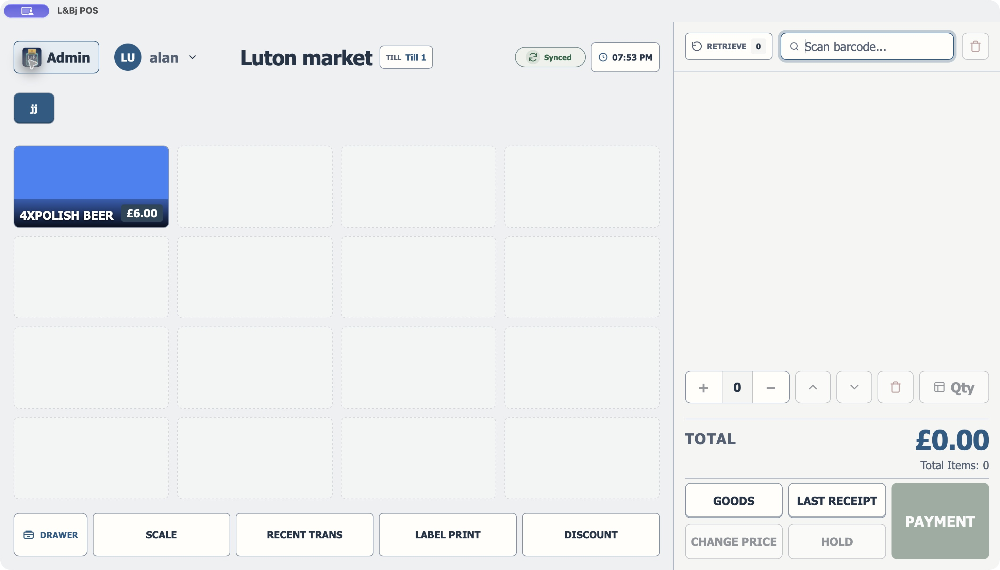
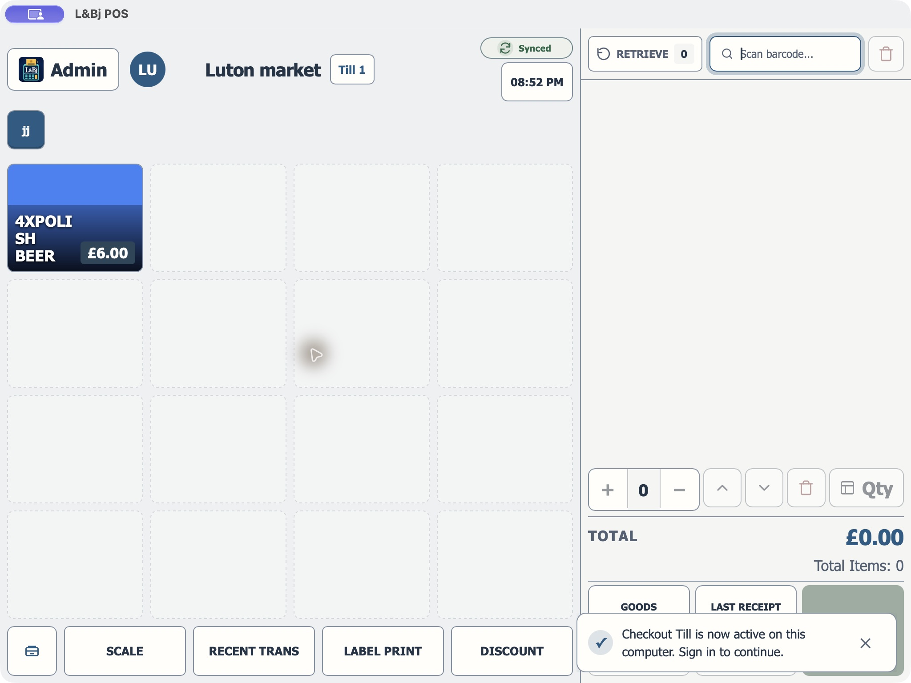